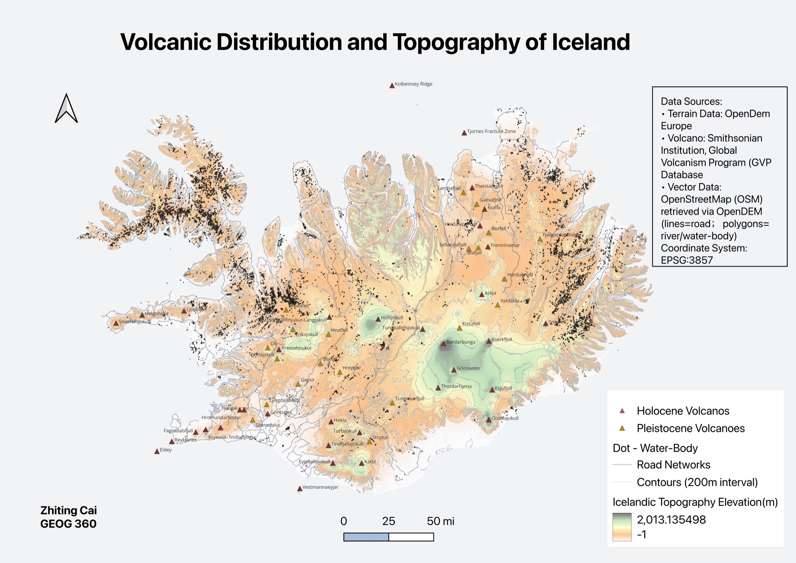
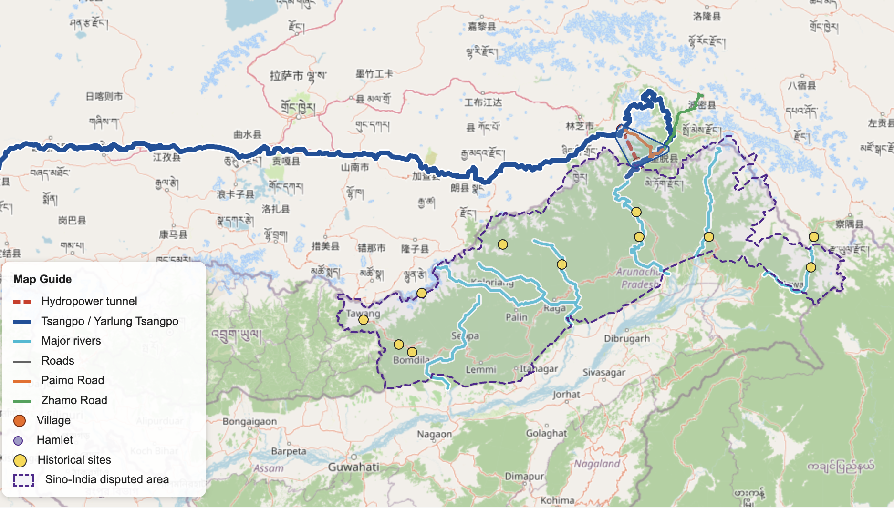
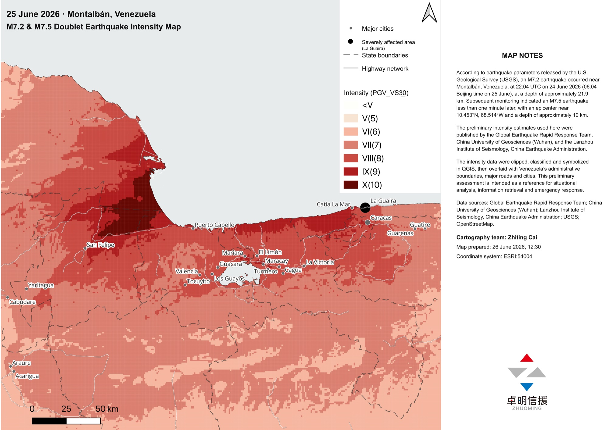

Selected GIS work · Course projects & volunteer mapping
UW Course Work
& volunteer mapping
Two University of Washington course projects, followed by an earthquake intensity map prepared for the disaster-response organization Zhuo-Ming (卓明).
01 / GEOG 360 · GIS cartography
Volcanoes in
Iceland’s landscape
The final map brings Holocene and Pleistocene volcanic features into the same view as elevation, contours, roads, and water bodies. It gives the volcanic locations a landscape context, making it possible to compare their distribution across Iceland’s coast, interior, and highlands.
I used separate symbols for the two volcanic groups and a light elevation ramp to keep the terrain readable beneath them. The map combines the Smithsonian Global Volcanism Program’s volcano data, OpenDEM terrain data, and OpenStreetMap features.

From proposal
to final map
The proposal began with a wider question about volcanic hazards, terrain, and infrastructure accessibility. The final map presented here concentrates on volcanic distribution and topographic context. The proposal is included below so readers can distinguish the initial analytical plan from the finished cartographic output.
02 / GEOG 465 · Interactive web mapping
Hydropower, rivers,
and the China–India frontier
This Leaflet project examines how proposed hydropower infrastructure, river systems, historical places, and disputed frontier space overlap in the eastern Himalaya. I prepared spatial layers in QGIS, converted them to GeoJSON, and selected attributes for labels and popups.
River names are part of the map’s interpretation. English labels help readers navigate the interface, while popup fields retain Chinese names, Tibetan or Tibetic transliterations, aliases, and name meanings where available. The aim is to keep the map legible while preserving the local naming context.

The image records the feedback and revision process. The course submission focused on the proposed tunnel, major rivers, historical sites, and disputed-area boundary; the published map continued to develop afterward.
What feedback
changed
Peer feedback made the first view and visual hierarchy central design questions. I widened the opening extent, made the proposed tunnel more prominent, reduced the weight of contextual layers, and added a legend. I also made the disputed-area polygon non-interactive so that it would not intercept clicks on rivers and places beneath it.
The project left me with a further question: how much should a map ask readers to discover for themselves? An exploratory interface supports comparison, but a guided narrative can explain why a particular reach or place matters. Following the Tsangpo explores that question through a separate historical story map.
The boundary layer provides context for academic discussion and does not establish an authoritative territorial interpretation.
03 / QGIS learning exercise · Zhuo-Ming (卓明)
Earthquake intensity:
a QGIS learning exercise
An early exercise made while learning QGIS, prepared for the disaster-response organization Zhuo-Ming (卓明). This was volunteer work outside UW coursework.
I made this map while learning QGIS, as a practical exercise for the disaster-response organization Zhuo-Ming (卓明). It combines preliminary earthquake intensity estimates with cities, major roads, and administrative boundaries around Montalbán, Venezuela.
The work gave me practice in clipping raster data, classifying values, choosing symbols, and arranging a map layout. I used a sequential red palette for intensity and kept the reference layers lighter. The notes beside the map identify the data sources, describe the processing steps, and explain that the estimates are preliminary.

Making the map
usable
The intensity surface alone gives little help in locating a named city or transport route. Adding those reference layers connects the estimates to places readers can identify. The accompanying notes retain the provenance of the estimates and the processing steps, making the map easier to assess and reuse.
Source credits on the original map include the Global Earthquake Rapid Response Team, China University of Geosciences (Wuhan), the Lanzhou Institute of Seismology, USGS, and OpenStreetMap.
04 / Project materials
Maps and working documents
GEOG 360
Final Iceland map PNG ↗Original project proposal PDF ↗
Data credits: Smithsonian Global Volcanism Program, OpenDEM Europe, and OpenStreetMap. Full credits remain on the original map.
GEOG 465
Published interactive map ↗Original project report DOCX ↓Related project: Following the Tsangpo →The original report includes the design process, peer feedback, revisions, and future directions.